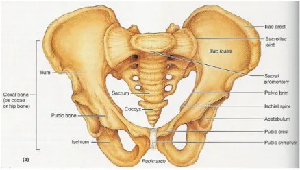

Expanded Nursing Uganda Explanation
Female Pelvis should be reviewed through safe maternal and newborn assessment, early recognition of danger signs, respectful communication and timely referral. Connect the definition to vital signs, bleeding, fetal or newborn wellbeing, patient education and local protocol requirements.
Contents, 19 sections (tap to expand)
01 Introduction To Obstetric Anatomy
This field focuses on the anatomical structures involved in pregnancy , labor , and the postpartum period . Key areas of study include the pelvis , pelvic floor , female reproductive system , female breast , male reproductive system , embryology , fetal skull , and the female urinary system .
- Anatomy : The study of the structures of the body.
- Physiology : The study of how the body functions.
- Obstetrics : A branch of medicine that focuses on pregnancy, childbirth, and the postpartum period (puerperium).
02 The Female Pelvis
Location : The pelvis is positioned between the movable vertebral column, which it supports, and the lower limbs, upon which it rests. It connects to the fifth lumbar vertebra above and the head of the femur (thigh bone) in the acetabulum (hip socket) below.
Shape : The pelvis resembles a bony basin.
Size : It is the largest bony structure in the body , with size varying based on individual age and body size.
Structure : The pelvis consists of the following components:
- Bones
- Joints
- Ligaments
03 Bones of the Pelvis
These are two large bones on either side of the sacrum, where the femur bones connect. Each innominate bone is made up of three parts that meet at a cup-shaped depression known as the acetabulum:
Ilium : The largest and flared-out part of the innominate bone. It articulates with the alae (wings) of the sacrum and forms the upper two-fifths of the acetabulum.
- Iliac Crest : The upper border of the ilium.
- Anterior Superior Iliac Spine : The point where the iliac crest ends at the front.
- Anterior Inferior Iliac Spine : Located about 2.5 cm below the anterior superior iliac spine.
- Posterior Superior Iliac Spine : The point where the iliac crest ends at the back.
- Posterior Inferior Iliac Spine : Located about 2.5 cm below the posterior superior iliac spine. This marks the upper border of the greater sciatic notch, where the sciatic nerves pass.
Ischium : The lowest part of the innominate bone, forming the lower two-fifths of the acetabulum.
- Ischial Tuberosity : The body of the ischium, where the body rests.
- Ischial Spine : Located about 2.5 cm above the ischial tuberosity. It divides the lesser and greater sciatic notches.
Pubis : The smallest part , forming the lowest fifth of the acetabulum. It includes the superior ramus, body, and inferior ramus. The two pubic bones join at the symphysis pubis.
- Superior Ramus : The upper part of the pubis.
- Body : The main part of the pubis.
- Inferior Ramus : The lower part of the pubis.
- Symphysis Pubis : The right and left pubic bones fuse together with a pad of cartilage at the symphysis pubis.
- Obturator Foramen: The space surrounded by the inferior and superior pubic rami.
A wedge-shaped structure made up of five fused sacral vertebrae , with foramina (holes) through which blood vessels, nerves, and lymphatics pass. The sacrum is smooth inside to protect organs and rough outside for muscle attachment. Parts of the Sacrum :
- Sacral Promontory : The upper border of the first sacral vertebra, projecting forward over the hollow of the sacrum.
- Hollow of Sacrum : The smooth, concave anterior surface.
- Alae of Sacrum : Wing-like extensions on each side of the first sacral vertebra.
- Sacral Canal : Runs through the center of the bone and opens at the level of the fifth sacral vertebra. It provides a passage for the spinal cord and spinal nerves. At the level of the second and third sacral vertebrae, the nerves spread out to form the Cauda equina (horse’s tail).
A vestigial tailbone , made up of four fused coccygeal vertebrae . It is triangular in shape and articulates with the sacrum at the sacro-coccygeal joint.
04 Pelvic Joints
1. Sacroiliac Joints : The strongest joints in the body , located between the first two sacral vertebrae and the ilium. These joints allow limited movement and are supported by ligaments.
- Location : Between the first two bodies of the sacral vertebrae and the upper surface of the ilium.
- Function : Strongest joints in the body, allowing limited movement. They are surrounded and supported by ligaments.
2. Symphysis Pubis : A pad of cartilage between the two pubic bones , forming a cartilaginous joint that unites the pubic rami.
- Definition : A pad of cartilage lying between the two bodies of the pubic bone.
- Function : A cartilaginous joint uniting the two rami of the pubic bone.
- Size : Approximately 4 cm in length, with supporting ligaments around it. Clinical Note: During pregnancy, the hormone progesterone relaxes and softens the smooth muscles of these joints, causing backache and pain at the symphysis.
3. Sacrococcygeal Joint : This joint allows the coccyx to bend backward during labor, providing more room for the fetal head to pass through the birth canal.
- Location : Where the base of the coccyx articulates with the tip of the sacrum.
- Function : Allows a bend backwards during labor, providing more room for the fetal head as it passes through the birth canal.
05 Pelvic Ligaments
These strong fibrous bands strengthen the pelvic joints and support the pelvic organs. They include:
- Sacro-Iliac Ligaments : Strengthen the sacroiliac joint.
- Sacro-Tuberous Ligaments: Stretch from the lower sacrum to the ischial tuberosities.
- Sacro-Spinous Ligaments : Extend from the lower sacrum to the ischial spines, forming the posterior wall of the pelvic outlet.
- Inter-Pubic Ligament : Strengthens the pubic bones.
- Inguinal Ligaments : Extend between the anterior superior iliac spine and the pubic body.
- Lacuna Ligaments : Lie beneath the inguinal ligaments.
- Sacro-Coccygeal Ligament : Strengthens the sacro-coccygeal joint.
- Obturator Ligaments : Cover the obturator foramen, allowing the passage of blood vessels, nerves, and lymphatics.
06 Divisions of the Pelvis
The pelvis is divided into:
1. The Lesser or True Pelvis (Pelvis Minor) : The lower part of the pelvis, crucial in childbirth.
- Location : The bottom part of the false pelvis.
- Importance : It is for childbirth as it forms the birth canal.
- Components :
- Brim (Inlet) : The ring-shaped bone separating the false pelvis from the true pelvis.
- Cavity : The space between the brim and the outlet.
- Outlet : The lowest part of the true pelvis.
2. The Greater or False Pelvis (Pelvis Major) : The upper part, less important in midwifery.
- Location : The part above the pelvic brim.
- Importance : Less significant in midwifery.
07 The True Pelvis
Brim/Inlet : A ring-shaped bone separating the false pelvis from the true pelvis .
- Importance : The site where the engagement of the fetal head takes place.
- Shape : Round, except where the sacral promontory projects into it.
- Circumference : Approximately 36 cm, allowing a fetal head with a circumference of 35 cm to pass.
Landmarks :
- Promontory of the sacrum
- Alae of the sacrum
- Sacroiliac joint
- Ilio-pectineal eminence
- Superior pubic ramus
- Upper inner border of the body of the pubic bone
- Upper border of the symphysis pubis
- Ilio-pectineal line
- Sacral Promontory : If prominent, it can reduce the antero-posterior diameter, obstructing labor.
- Ilio-pectineal Eminence : Important for determining the fetal head’s position. Important because it’s the point where the denominator (the presenting part of the fetus) faces during labor.
- Symphysis Pubis : If narrow, it reduces the antero-posterior diameter.
- Engagement : The oblique diameter is crucial for the engagement of the fetal head.
Diameters of the Pelvic Brim/Inlet:( 11-12-13)
- Antero-Posterior Diameter : Measures 11 cm from the sacral promontory to the upper inner border of the symphysis pubis. Three conjugates are involved: anatomical (12 cm), obstetrical, and diagonal (12-13 cm, subtracting 1-2 cm for tissues).
- Oblique Diameters : Right and left, measuring 12 cm from the sacro-iliac joint to the ilio-pectineal eminence.
- Transverse Diameter : The largest diameter on the brim, measuring 13 cm from the ilio-pectineal line.
08 The Pelvic Outlet
- Definition : The lowest part of the true pelvis.
- Significance : Forms the narrow pelvic strait through which the fetus must pass. The pelvic outlet is the narrowest part of the pelvis, through which the fetus must pass.
- Shape : Diamond-shaped.
- Circumference : 36 cm.
- Antero-posterior Diameter: Measured from the lower border of the symphysis pubis to the lower border of the sacrum (13 cm).
- Oblique Diameter : Difficult to measure accurately due to the stretching of the sacro-tuberous ligaments by the fetal head. It’s accepted to lie parallel to the oblique diameter of the brim and cavity and should be at least 12 cm.
- Transverse Diameter : Measured between the ischial spines (11 cm).
- Coccyx : Important because it tilts (extends) backwards during labor to give more room for the passing fetus.
- Sub-pubic Arch : Should accommodate at least two fingers and leave space for the passage of the baby.
- Ischial Spines : Should be round. If prominent, they reduce the transverse diameter and obstruct labor.
- Sacro-spinous Ligament : Should be soft and stretch outwards for the baby to pass.
09 Functions of the Pelvis:
- Birth Canal : Provides the passage through which the fetus must pass to be born.
- Protection : Contains and protects internal reproductive organs such as the bladder, uterus, and vagina.
- Weight Transmission : Transmits the weight of the trunk to the legs, acting as a bridge between the femurs.
- Movement : The primary function of the pelvic girdle is to allow movement of the body.
- Sitting and Kneeling : Permits a person to sit or kneel.
- Nerve Transmission : The sacrum transmits the cauda equina (the continuation of the nerve roots in the lumbar and sacral region) to and conveys nerves to various parts of the pelvis.
10 Types of Pelvis
There are four main types of pelvis, each with distinct characteristics:
11 Gynaecoid Pelvis (Normal Female Pelvis)
The normal female pelvis for childbirth . Found in women of average weight and height with a shoe size 4 or larger.
Characteristics:
- Brim : Round, except where the sacral promontory protrudes slightly inward.
- Cavity : Generous fore pelvis (the part in front of the transverse diameter), shallow cavity, broad, and well-curved sacrum.
- Outlet : Blunt ischial spines, well-rounded sciatic notches, and a subpubic angle of 90 degrees.
Effects on Labour :
- The rounded shape is favourable for childbirth. The fetus presents with its head in the occipito anterior position , which aligns with the rounded part of the pelvis, facilitating a smoother labor.
- Favorable for the fetus at the start of labor because the pelvis is well-rounded anteriorly, allowing the fetus to present with the most rounded part of its head (occipital anterior).
12 Android Pelvis (Male-like Pelvis)
Resembles a male pelvis. Found in short and heavily built women.
Characteristics
- Brim : Heart or triangular-shaped.
- Cavity : Narrow fore pelvis, deep cavity, and straight sacrum.
- Outlet : Prominent ischial spines, narrow sciatic notches, and a subpubic angle less than 90 degrees.
Effects on Labour :
- Brim : Favours a posterior position of the occiput (fetus presents with the occiput lying posteriorly).
- Outlet : May become obstructed at the outlet due to prominent ischial spines reducing the transverse diameter ( Deep transverse arrest ). Emergency Caesarean section is often necessary.
13 Platypelloid Pelvis (Flat Pelvis)
A flat pelvis characterized by a kidney/bean-shaped brim and a short anteroposterior diameter.
Characteristics
- Brim : Kidney or bean-shaped with a short anteroposterior diameter.
- Cavity : Wide transverse diameter, flat sacrum, and shallow cavity.
- Outlet : Blunt ischial spines, wide sciatic notches, and a subpubic angle greater than 90 degrees.
Effects on Labour :
The fetus’s head usually engages in the transverse diameter. However, due to the narrow anteroposterior diameter, the head may require tilting (asynclitism) to pass through, sometimes leading to face presentation or requiring a Caesarean section if the head remains high.
- Engagement : The head must engage with the sagittal suture in the transverse diameter.
- Descent : Descent through the cavity is usually without difficulty.
- Asynclitism : Lateral tilting of the head is necessary to allow the bi-parietal diameter to pass the narrowest anteroposterior diameter of the brim.
- Presentation : Can result in face presentation.
- Contracted Brim : If the brim is severely contracted, the fetal head remains floating high above it, requiring a Cesarean section.
14 Anthropoid Pelvis
Found in tall women with narrow shoulders.
Characteristics
- Brim : Long oval shape, with a longer anteroposterior diameter than the transverse diameter.
- Cavity : Long, deep sacrum with side walls that diverge.
- Outlet : Less prominent ischial spines, very wide sciatic notch, and a subpubic angle greater than 90 degrees.
Effects on Labour : Labour is usually not problematic, but the fetus often remains in a posterior position, leading to delivery with the face towards the pubis instead of the perineum.
- Labor : Usually does not present any difficulties.
- Position : Direct occipito posterior position is often a feature, and the position adopted for engagement may persist up to delivery.
- Delivery : The fetus passes through the pelvis remaining in the same position and so delivers face to pubis instead of face to perineum.
Summary of Pelvic Types
- Features Gynaecoid Android Anthropoid Platypelloid
- Brim Rounded Heart-shaped Long oval Kidney-shaped
- Fore pelvis Generous Narrow Narrowed Wide
- Side walls Straight Convergent Divergent Divergent
- Ischial spines Blunt Prominent Blunt Blunt
- Sciatic notch Rounded Narrow Wide Wide
- Subpubic angle 90° <90° >90° >90°
- Incidence 50% 20% 25% 5%
15 Other Pelvic Variations
These variations can result from developmental anomalies, dietary deficiencies, injuries, or diseases. They often lead to a contracted pelvis, where one or more diameters are reduced, complicating the normal labor process.
1. Developmental Anomalies .
- Robert’s Pelvis : The sacrum’s wings are underdeveloped or absent , causing contraction in all diameters, requiring a Caesarean section.
- Naegele’s Pelvis : The sacrum has only one wing due to congenital abnormalities or disease, a true Naegele’s pelvis may occur in a woman who has walked with a limp for many years, also requiring a Caesarean section.
- Assimilation Pelvis : Can be high (six vertebrae in the sacrum) or low (four vertebrae in the sacrum). Normal is 5.
- High Assimilation Pelvis: The sacrum consists of six vertebrae.
- Low Assimilation Pelvis: The sacrum consists of four vertebrae.
- Justominor Pelvis : A smaller version of the gynaecoid pelvis, common in petite women, with proportional reductions in all measurements. A Gynaecoid type of pelvis where all measurements are reduced but in correct proportions. Common in petite women of small stature. Effects on Labor:
- Small Baby : Can be delivered vaginally with little or no problems.
- Large Baby : May require Cesarean section.
2. Dietary Deficiencies .
- Rachitic Pelvis : Deformity due to rickets, which affects the person in early childhood due to lack of vitamin D and calcium.
- Osteomalacic Pelvis : An extreme deformity due to osteomalacia from dietary deficiencies, caused by a deficient diet and lack of vitamin D , leading to softening of the bones and a Y-shaped pelvic brim.
3. Injuries and Diseases .
- Asymmetrical Pelvis : May result from congenital hip dislocation or polio, causing distortion on one side.
Main Differences Between Male and Female Pelvis
- Feature Male Female
- General structure Thick and heavy Thin and light
- Muscle attachments Well marked Poorly marked
- False pelvis Deep Shallow
- True pelvis Narrow and deep Wide and shallow
- Superior pelvic aperture Heart-shaped Oval or rounded
- Inferior pelvic aperture Comparatively small Comparatively large
- Subpubic angle Narrow Wide
- Obturator foramen Round Oval
- Acetabulum Large Small
- Describe the four bones of the gynaecoid pelvis.
- Describe the innominate bones.
- List four diameters of the pelvic brim.
- Outline three important landmarks of the pelvic brim.
- Describe the three parts of the true pelvis in structure.
- List four joints of the pelvis.
- Outline six ligaments of the pelvis.
- Describe the main four types of pelvis.
- A prime gravida at 36 weeks of gestation comes for antenatal care. How would you assess her pelvis?
- Explain five causes of a contracted pelvis.
16 Nursing Uganda Clinical Lens
Use Female Pelvis as a practical nursing topic, not only a memorized definition. Read the topic through the safety of two patients: the mother and the fetus or newborn.
- What to understand first: define female pelvis, identify the normal or expected pattern, then explain what changes when the patient is unwell.
- Why it matters in care: the nurse must recognize risk early, explain findings clearly, document accurately and know when to escalate.
- How to revise it: connect each point to assessment, nursing diagnosis or care problem, intervention, rationale and evaluation.
17 Assessment Guide
- Maternal vital signs, bleeding, pain, contractions, uterine tone and danger signs.
- Fetal or newborn wellbeing, feeding, temperature, breathing and activity.
- History of pregnancy, parity, medications, allergies, investigations and referral risks.
18 Nursing Priorities, Rationales and Outcomes
- Recognize danger signs early and escalate without delay.
- Provide respectful communication, privacy, infection prevention and clear documentation.
- Teach the mother what to monitor at home and when to return urgently.
The rationale for these priorities is patient safety: nursing actions should prevent deterioration, reduce discomfort, support recovery and create clear evidence for the next caregiver.
- Expected outcome: Mother and baby remain stable, danger signs are acted on early, and the family understands follow-up instructions.
19 Patient Teaching and Revision Check
- Explain female pelvis in simple language the patient or caregiver can repeat back.
- Teach warning signs, medicine or follow-up instructions, hygiene or lifestyle points where relevant.
- For exams, prepare a short answer using: definition, causes or risk factors, signs, assessment, management, complications and prevention.
- For ward practice, document baseline findings, actions taken, patient response and the plan for review.
Illustrations and Diagrams (1)

Related Video Lectures
Watch nursing lecture videos on YouTube for this topic. Opens in a new tab.
Watch on YouTubeExternal link: YouTube may use its own cookies and terms. Nursing Uganda is not affiliated with YouTube.